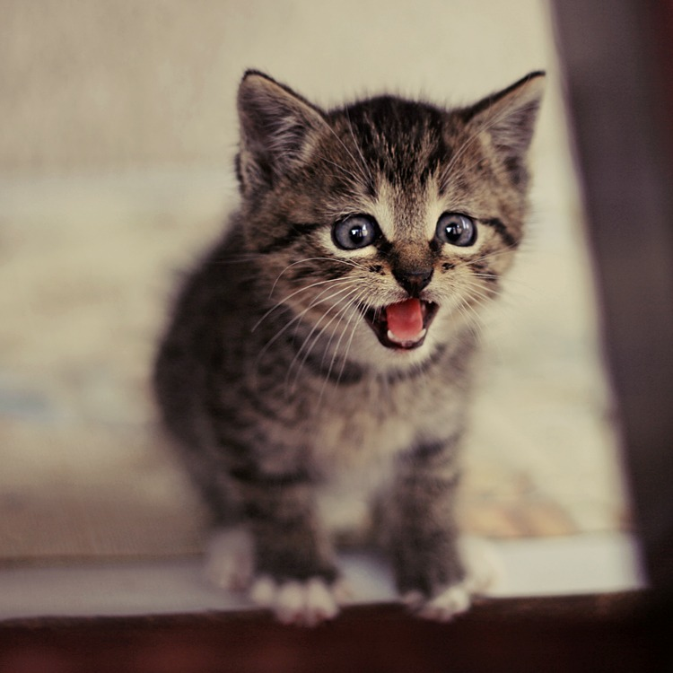

Cat
A cat can’t climb head first down a tree because every claw on a cat’s paw points the same way. To get down from a tree, a cat must back down.
- Scientific name: Felis catus
- Average Length: 46 cm
- Average Lifespan: 15.1 years
- Favourite food: Fish
Female domestic catshave kittens from spring to late autumn, with litter sizes ranging from two to five kittens. Domestic cats are bred and shown at events as registered pedigreed cats, a hobby known as cat fancy. Failure to control breeding of pet cats by spaying and neutering, as well as abandonment of pets, resulted in large numbers of feral cats worldwide.